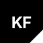

Design
From brief to drawings
Concept, CAD, DFM review, and material selection - delivered as a fabrication-ready package.

Kestrel FabricationsKestrel Fabrications is in an exploratory phase: a design-led studio building toward custom industrial work, with parts produced through a mix of in-house build and a vetted network of fabrication partners.
Concept, CAD, DFM review, and material selection - delivered as a fabrication-ready package.
Sheet metal, weldments, and small assemblies built in-shop when material, volume, and method line up.
Rotomold, fiberglass, anodizing, and higher-volume runs routed through vetted partners.
Prototype, finish QA, and delivery managed end-to-end - same standard whether in-shop or partner-built.
As an early-stage studio, we're requesting material samples and capability literature from suppliers and fabrication partners. These help inform our designs and the production paths we route work through.
For supplier introductions or early-stage project conversations, write to the email opposite. We aim to respond within two business days.